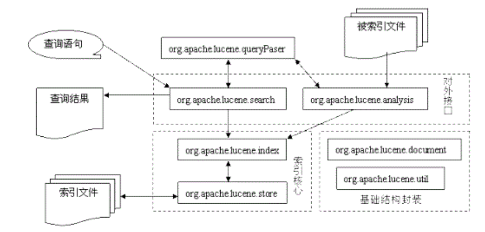
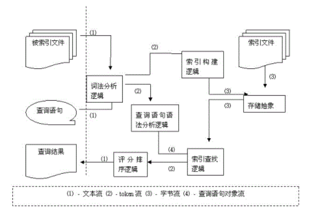
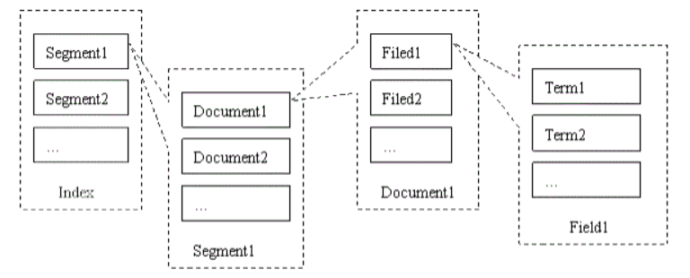
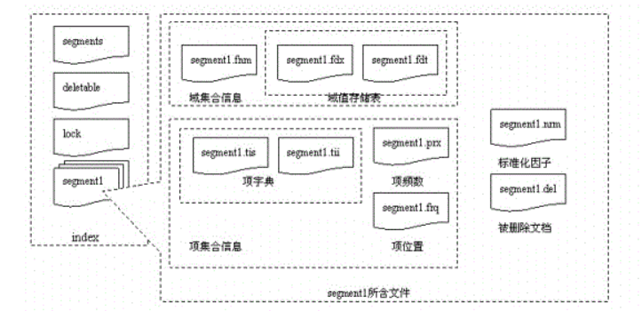

前言
在平常的工作项目中，频繁用到了Elasticsearch这个搜索引擎，包括日志查询，大文本查询，地理空间查询等等场景。之前也专门学习过 ES 的结构，知道每个ES节点包含多个Shard，一个shard是一个Lucene index ，Shard中包含一个个Segment，每个Segment 都是一个完整的倒排索引。
原本是想好好研究下Lucene的原理， 但是在读ES的官方文档的时候，看到上面有这么一段描述
Elasticsearch is an open-source search engine built on top of Apache Lucene™, a full-text search-engine library. Lucene is arguably the most advanced, high-performance, and fully featured search engine library in existence today—both open source and proprietary.
But Lucene is just a library. To leverage its power, you need to work in Java and to integrate Lucene directly with your application.Worse, you will likely require a degree in information retrieval to understand how it works. Lucene is very complex.
好家伙，官方都说Lucene复杂到难以理解，甚至需要读个信息学相关学位，那我还是不去深究了吧，反正能用就ok了嘛！抱着这样的想法，我放弃了继续探究的打算。
然而，随着业务越来越复杂，流量规模越来越大，ES数次出现了高负载， 卡顿甚至宕机的问题，也试着做了好多次优化，但效果并不是特别理想。虽然加钱加机器能解决很大一部分问题，但作为技术人员，还是想要以技术手段切入。
于是，我不得不硬着头皮去学习Lucene原理了。我查询了许多相关资料甚至论文，结果出乎意料的是，Lucene并不是真的十分晦涩难懂，认真理解理解，还是比较容易明白个大概的。本文便是我个人关于Lucene的认知。
一些基础概念
倒排索引和全文检索
所谓倒排索引（Inverted index），对应的是传统的正排索引(forward index)，或者叫顺序查找。
以一篇论文为例，文章由各种单词和符号构成，正排索引是站在文章的角度，记录每个文档（ID）都含有哪些单词，以及每个单词出现了多少次（词频）及其出现位置（偏移量）；而倒排索引是站在单词角度看文档，标识每个单词分别在那些文档中出现(ID)，以及在各自的文档中每个单词的词频和偏移量。
倒排索引的建立过程就是先用待查询内容构建文档，然后将文档进行分词，词干提取，转小写，去重等一系列操作后组织成词汇表，存储起来以待查询。
由此不难看出倒排索引的优缺点，优点是大大增加的查询效率和准确率，尤其适合海量数据和大文本的查询。相应的，缺点就是占用了更多的储存空间，属于典型的空间换时间类型。
而全文检索就是以倒排索引为基础，利用预先建立好的索引，针对文档中的字段进行搜索的过程，效率远高于数据库的模糊查找。
分词与分词器
分词原理
建立索引和查询的过程中，都是以基本的语素项为单位的。基本的语素项就是通过分词得到，这个过程决定了索引单元金额最终的匹配过程。分词在文本索引的建立过程和用户提交检索过程中都存在。利用相同的分词器，把短语或者句子切分成相同的结果，才能保证检索过程顺利进行。
英文分词的原理基本的处理流程是：输入文本、词汇分割、词汇过滤（去除停留词）、词干提取（形态还原）、大写转为小写、结果输出。
中文分词原理中文分词比较复杂，并没有英文分词那么简单。这主要是因为中文的词与词之间并不像英文中那样用空格来隔开。主要的方法有三种：基于词典匹配的分词方法、基于语义理解的分词、基于词频统计的分词。
基于字典匹配的分词方法，按照一定的匹配策略将输入的字符串与机器字典词条进行匹配。如果在词典中找到当前字符串，则匹配成功输出识别的词汇。
按照匹配操作的 扫描方向不同，字典匹配分词方法可以分为正向匹配和逆向匹配，以及结合了两者的双向匹配算法
按照不同长度优先匹配的情况，可以分为最大（最长）匹配和最 小（最短）匹配
按照是否与词性标注过程相结合，又可以分为单纯分词方法和分词与词性标注相结合的方法
几种常用的词典分词方法如下所示：- 正向最大匹配（由左到右的方向）
- 逆向最大匹配（由右到左的方向）
- 最少切分（是每一句中切除的词数最小）
基于语义理解的分词，模拟人脑对语言和句子的理解，达到识别词汇单元的效果。基本模式是把分词、句法、语义分析并行进行，利用句法和语义信息来处理分词的歧义。一般结构中通常包括分词子系统、句法语义子系统、调度系统。
基于词频统计的分词，这种做法基于人们对中文词语的直接感觉。通常词是稳定的词的组合，因此在中文文章的上下文中，相邻的字搭配出现的频率越多，就越有可能形成一个固定的词。
实际应用的统计分词系统都使用一个基本的常用词词典，把字典分词和统计分词结合使用。基于统计的方法能很好 地解决词典未收录新词的处理问题，即将中文分词中的串频统计和串匹配结合起来，既发挥匹配分词切分速度快、效率高的特点，有利用了无词典分词结合上下文识 别生词、自动消除歧义的优点。
Lucene中的分词器
1. StopAnalyzerStopAnalyzer
能过滤词汇中的特定字符串和词汇，并且完成大写转小写的功能。
2. StandardAnalyzer
根据空格和符号来完成分词，还可以完成数字、字母、 E-mail 地址、 IP 地址以及中文字符的分析处理，还可以支持过滤词表，用来代替 StopAnalyzer 能够实现的过滤功能。
3. SimpleAnalyzer
具备基本西文字符词汇分析的分词器，处理词汇单元时，以非字母字符作为分割符号。分词器不能做词汇的过滤，之进行词汇的分析和分割。输出地词汇单元完成小写字符转换，去掉标点符号等分割符。在全文检索系统开发中，通常用来支持西文符号的处理，不支持中文。由于不完成单词过滤功能，所以不需要过滤词库支持。词汇分割策略上简单，使用非英文字符作为分割符，不需要分词词库的支持。
4. WhitespaceAnalyzer
使用空格作为间隔符的词汇分割分词器。处理词汇单元的时候，以空格字符作为分割符号。分词器不做词汇过滤，也不进行小写字符转换。实际中可以用来支持特定环境下的西文符号的处理。由于不完成单词过滤和小写字符转换功能，也不需要过滤词库支持。词汇分割策略上简单使用非英文字符作为分割符，不需要分词词库支持。
5. KeywordAnalyzer
把整个输入作为一个单独词汇单元，方便特殊类型的文本进行索引和检索。针对邮政编码，地址等文本信息使用关键词分词器进行索引项建立非常方便
6. CJKAnalyzer
内部调用 CJKTokenizer 分词器，对中文进行分词，同时使用 StopFilter 过滤器完成过滤功能，可以实现中文的多元切分和停用词过滤。在 Lucene3.0 版本中已经弃用
7. ChineseAnalyzer
功能与 StandardAnalyzer 分析器在处理中文是基本一致，都是切分成单个的双字节中文字符。在 Lucene3.0 版本中已经弃用。
8. PerFieldAnalyzerWrapper
功能主要用在针对不同的 Field 采用不同的 Analyzer 的场合。比如对于文件名，需要使用 KeywordAnalyzer ，而对于文件内容只使用 StandardAnalyzer 就可以了。通过 addAnalyzer() 可以添加分类器。
9. IKAnalyzer
实现了以词典为基础的正反向全切分，以及正反向最大匹配切分两种方法。 IKAnalyzer 是第三方实现的分词器，继承自 Lucene 的 Analyzer 类，针对中文文本进行处理。
10. JE-Analysis
JE-Analysis 是 Lucene 的中文分词组件，需要下载。
11. ICTCLAS4Jictclas4j 中文分词系统
是 sinboy 在中科院张华平和刘群老师的研制的 FreeICTCLAS 的基础上完成的一个 java 开源分词项目，简化了原分词程序的复杂度，旨在为广大的中文分词爱好者一个更好的学习机会。
12. Imdict-Chinese-Analyzer
是 imdict 智能词典 的智能中文分词模块，算法基于隐马尔科夫模型 (Hidden Markov Model, HMM) ，是中国科学院计算技术研究所的 ictclas 中文分词程序的重新实现（基于 Java ），可以直接为 lucene 搜索引擎提供简体中文分词支持。
13. Paoding Analysis
Paoding Analysis 中文分词具有极 高效率 和 高扩展性 。引入隐喻，采用完全的面向对象设计，构思先进。 其效率比较高，在 PIII 1G 内存个人机器上， 1 秒可准确分词 100 万汉字。 采用基于不限制个数的词典文件对文章进行有效切分，使能够将对词汇分类定义。 能够对未知的词汇进行合理解析。
14. MMSeg4J
mmseg4j 用 Chih-Hao Tsai 的 MMSeg 算法 实现的中文分词器，并实现 lucene 的 analyzer 和 solr 的 TokenizerFactory 以方便在 Lucene 和 Solr 中使用。 MMSeg 算法有两种分词方法： Simple 和 Complex ，都是基于正向最大匹配。 Complex 加了四个规则过虑。官方说：词语的正确识别率达到了 98.41% 。 mmseg4j 已经实现了这两种分词算法。
Lucene核心内容
Lucene 组织结构

从图中可以看出，Lucene主要由基础结构封装，索引核心以及对外接口组成，其中索引核心是整个系统的重点。
Lucene的系统设计充分考虑了模块之间的低耦合性，使得其实现更容易理解，也易于扩展。Lucene 一般是作为一个运行库被包含进应用中，而不是以单独的索引服务存在，这也是 Elasticsearch 产生的意义。
Field（域）的概念
获取原始内容的目的是为了建立索引，在索引前需要将原始内容创建成文档（Document），文档中包括一个一个的域（Field），域（field）在lucene中就是用于搜索和存储分词后的内容，我们在搜索时就是通过域进行的。
例如磁盘中的一个文件我们将它当作一个Document，那么该Document包括这些Field域:
- file_name：文件名
- file_path: 文件路径
- file_size: 文件大小
- file_content: 文件内容
建立和使用索引的过程
Lucene 建立索引主要由几个过程组成：
- 采集文档
- 建立文档
- 利用分词器分析文档
- 建立倒排索引
- 将索引存入索引库
使用索引的过程：
- 查询接口
- 创建查询对象
- 执行查询（从索引库中查询）
- 获取查询结果，并将结果返回给用户

上图反映了 Lucene 中数据流的流向，图中存在4种数据流：文本流、token流、字节流与查询语句对象流。
- 文本流用以表示将要索引的文件以及向用户输出信息，在Lucene中采用UCS-2编码，以适应多种语言文字处理
- token流是Lucene内部的概念，是对传统文字中词的概念的抽象，也是Lucene直接处理的最小单位。简单讲就是一个词和所在域值的组合
- 字节流是对文件抽象的直接操作的体现，通过固定长度的字节流（8 bit）的处理，使文件操作与平台无关
- 查询语句对象流则是在查询语句解析时使用的概念，它对查询语句抽象，通过类的继承结构反映查询语句的结构，将之传送到查找逻辑进行查找
Lucene 数据类型
在Lucene的web站点上， 有关于Lucene的文件格式的规范，其规定了Lucene的文件格式采取的储存单位、组织结构、命名规范等内容。
在Lucene的文件格式中，以字节为基础，定义了一些数据类型：
- Byte，占1个字节，基础类型
- UInt32，占4个字节， 32位无符号整数，高位优先
- UInt64，占8个字节， 64位无符号整数，高位优先
- VInt，动态长度整数，最少1个字节，每个字节最高位标识剩余字节数，低七位作为整数的值，高位优先
- Chars，动态长度，至少1字节，采用UTF-8编码的Unicode字符序列
- String，动态长度，至少2字节，由VInt和Chars组成的字符串类型，VInt表示Chars的长度
以上的数据类型都是以Byte为基础定义的，因此与平台无关。
Lucene 索引文件结构

Lucene 索引由若干段（segment）组成，每一段由若干域（field）组成，每个域由若干项（term）组成。
项是最小的索引单位，它代表一个字符串以及其在文件中的位置、出现频次等信息。域是一个关联的元组，由一个域名和一个域值组成，域名是一个字符串，域值是一个项。文档是提取了某个文件中所有信息之后的结果，这些组成了段，或称为一个子索引。子索引可以组合为索引，也可以合并为一个新的子索引。
从结构上来看，索引被处理为一个目录，其中含有的所有文件即为其内容，这些文件按照所属的段不同分组存放，同组的文件拥有相同的文件名，不同的扩展名。此外还有三个文件segments、deletable和lock，分别用于保存所有段的记录、保存已删除文件的记录以及控制读写的同步。

每个段的文件中，主要记录了两大类信息：域集合与项集合。域集合与项集合中的文件组采用了一种类似的存储方法：一个小型的索引文件运行时载入内存，一个对应于索引文件的实际信息文件可以按照索引记录的偏移量随机访问。
Lucene索引构建模块
这部分还在啃……之后更新吧